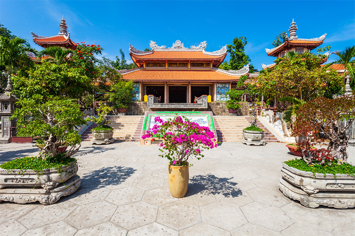

Chùa Long Sơn - Ngôi chùa linh thiêng, đẹp bậc nhất Nha Trang
Bức tượng Phật khổng lồ lớn nhất Việt Nam tại chùa Long Sơn
Vi tri:
Chùa Long Sơn Nha Trang được biết tới với cái tên chùa Phật trắng. Ngôi chùa này tọa lạc ở địa chỉ ở số 22 đường 23 tháng 10, phường Phương Sơn, TP. Nha Trang ngay dưới chân núi Trại Thủy. Nơi đây bao gồm chùa Long Sơn phía dưới và một ngôi chùa khác có tên là Hải Đức phía trên.
 Chùa Long Sơn địa chỉ tại phường Phương Sơn, TP. Nha Trang
Lich su hinh thanh:
Chùa Long Sơn được xây dựng vào thế kỷ 19, mang trong mình những nét kiến trúc điêu khắc độc đáo, tinh tế từ thời xa xưa. Trải qua hàng trăm năm sau nhiều lần trùng tu, ngày nay chùa Long Sơn đã được chứng nhận là ngôi chùa có tuổi thọ lớn bậc nhất Việt Nam. Đứng từ vị trí cao nhất đưa mắt nhìn ra xa, du khách sẽ được chiêm ngưỡng vẻ đẹp nhộn nhịp của thành phố Nha Trang xinh đẹp. Vì vậy ngôi chùa ngày đã trở thành một trong những địa điểm du lịch Nha Trang hấp dẫn thu hút rất nhiều khách du lịch thập phương ghé thăm.
Đứng trên đỉnh đồi, từ vị trí tượng Phật cao nhất, du khách có thể đưa mắt ngắm toàn cảnh thành phố Nha Trang